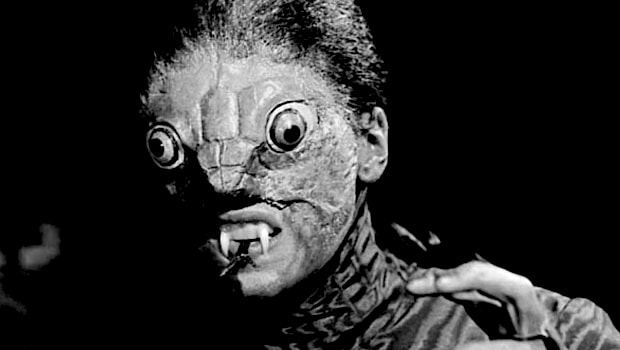
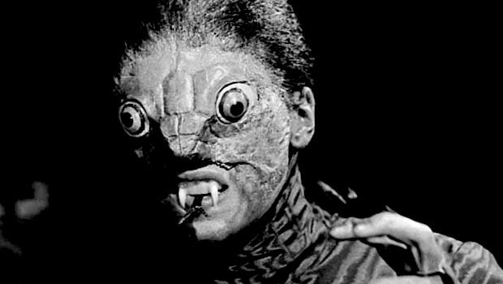

I am used to such mode of thought since childhood, being exposed to a large library at home. There was virtually no restriction on which work would end up in my hands and having early access to late 19th century Russian literature along with ancient greek history and myths, books of Edgar Allan Poe and so on. I discovered that in that dark room filled with not-fully painted, mostly tragic and/or questionable stories that were so silent, ambiguous and bigger than me, my consciousness was at most of it’s work capacities and whilst leaving that room it could be physically felt that the brain was burning. Burning because it was running after something it couldn’t understand at first, surrounded by lexemes out of its’ knowledge. Knowledge that was small and dark. It felt magical, and only later I found out that
“only where there is heat is there distinction between past andfuture” Rovelli, C. (2018). The order of time. London: Penguin Books.
and lessons learnt. This is why I seek to re-invigorate a sense of wonder, uncertainty and mystery in life by implementing and emphasising the Nocturnus and fears of unknown. And with such aim this paper will be looking into history of how and if various parts of Nocturnal Culture were influencing human evolution, if they had an effect on individuals or masses, both positive and negative, in order to find proving arguments that can be served to our society which is drowning in “positive living bullet journals” and “books of everyday gratefulness” instead of simply turning of the lights and thinking. It should probably also be admitted that to some readers of this paper the attitude which shines through the first sentences might already feel alerting and confusing but I will allow myself such a privilege of provoking disagreement amongst them as disagreement is the most fertile soil for analysis. And it should be, since the problematic of today that is concealed in the loss of genuineness and almost dogmatic creation of artificial bubbles of joy is hugely important and dangerous for our potential as human beings.
Most of humanity tends to forget one simple verity - fear is not one of our fundamental emotions for the reason of making us feel like little cubs lost in the dangerous jungles with no hope and mom around. Fear is built into us for the reason of evolution, as it is meant to be one of the main triggers for human development and survival. We fear the dark? We light fire. We think we light fire to get warmer? That is true as well, as we can not check what was happening in the minds of our predecessors. But behind that - still hides the fundamental and subconscious fear of death. And it can be said that this is brilliant and beautiful how opposition of contradictories paves the road for our benefit. Denouncing it now along with anything that evokes or reminds of it is a path to unfortunate regress of our minds. And the most painful fact in this issue is that whilst declining the concept of fear we are doing it out of fear of fear.
In the world of human race being very close to Yevgeny Zamyatin’s “We”, majority of our mainstream public is becoming more than simply atrophied. As if produced in the same capsule, a large part of our population has an inherited loss of curiosity or better to say - adventure. This can also be seen in a way of our “acceptance” of nocturnal culture, which does not happen and become popular unless it is diminished to the PG-13 rating and wrapped in a creative yet standard packaging of predictability. Everyone is so unique and safe that everybody is the same and threatened without realising it and this is critical in terms of our further progress. It has nowhere to go and this is why we need this comeback to the “whole” to the “one”, to the night. Just as seen in example of Dr. Faust, such path (path of our mainstream culture, not the one of Faust) is too narrow and leads us to the end of knowledge way too fast, and in a way just as Faust, we long for nature, happiness and higher universe expecting it to be bright. We summon illusions that are soon to leave us unsatisfied. Whilst what needs to happen - is to look to your side, away from the empty path leading into nowhere, and inquire into the small lights far in the darkness of woods around you.
Some may argue back that we are not shying away from unknown as this is what drives our highly progressive sciences. But as much as we lost our fear of knowledge in the bright sterile scientific labs, we have to accept that testing new chemical solutions or trying to clone Dolly in the darkness of the less lit space that is not equipped with plans B, C, D etc.. would all of the sudden become much eerier. As much as we seek to convince others and ourselves that fear and negativity do not exist anymore and are just illusions of past and naive - there is still nothing that man fears more than the touch of the unknown. He wants to see what is reaching towards him and to be able to recognise, or at least clarify it. “Even clothes give insufficient security: it is easy to tear them and pierce through to the naked, smooth, defenceless flesh of the victim.”
Fear and darkness exist. Let’s cross it here. We live in society where everyone can be what they want, the kindest, brightest, most positive bravest self, yet fear is still there. In the way we move on the streets, restaurants, busses and trains, in the way we stand next to each other. Even then, when we are able to observe and inspect strangers closely - we still avoid actual physical contact with any of them as much as we can. And the reason why our attempts at eliminating fear and suspense from our society are perilous is hidden already in this example. “The only way to avoid fear of touch for man is the crowd. “The crowd he needs is the dense crowd, in which body pressed to body; a crowd, too, whose psychical constitution is also dense, or compact, so that he no longer notices who it is that presses against him.” And such scenario (from a certain perspective) portraits the stripping down of identity that highly reminds of the highly dystopian future that this way will be awaiting us in the end. Think of it this way, facing night and staying alone with yourself in the darkness when nothing else entertains you enough to distract from yourself is as uncomfortable as standing in an elevator with a single stranger. We can even say that a not so recent movie “Devil” (a mystic thriller about 5 strangers getting stuck in an elevator) is not so much about the Devil himself deciding to visit these 5 random people, but them facing their own Egos, portrayed with an image of Devil and triggered by a prolonged seclusion in a narrow singular space.
“I am aware of myself. And, of course, the only things that are aware of themselves and conscious of their individuality are irritated eyes, cut fingers, sore teeth. A healthy eye, finger, tooth might as well not even be there. Isn't it clear that individual consciousness is just sickness?”
THE GOOD UGLINESS OF NATURE In order to begin discussing relevance and materiality of Nocturnus we should first pose it in front of us as philosopher’s stone; count its angles, faces and reflections. Being translated from latin as “of the night” it gives us a big spectre of elements to bring to discussion at this table, moreover we have already started with one of them in the previous chapter. Fear is the basis of it all and having touched the fundament of the thesis we can now slowly come back to its main floorpan - night. Thus, further in this paper Nocturnus and fear will be inseparable due to their nature. Now it’s time to talk about the wild man, the wild times and the wild material.
As a prologue to this and following chapter we must say that avoiding the lure of pure psychological ideation and analysis of fear, this thesis corroborates the criticism towards specific trends existing in our era that would rather focus on the individual dimension of fear, thus missing its social aspects. Fear can not and must not ever be reduced to its emotional actuality, on the contrary, it must rather be regarded by anthropologists as the prime mover of rational cognition in treacherous or fatal conditions.
Night and love for it (also known as nyctophilia) are a complex matter, especially in our daylight-based civilisation. If we start with Nyctophilia itself, based on the latin origins of “Nycto” and “Philia” we can safely state that it is literally love for the darkness and night. But moreover (also from a personal perspective of a nyctophiliac myself) it is also a feeling of one’s belong in the night. As a side-effect people with nyctophilia tend to have attraction to darkness, cold rainy days and silence as well. And on top of that it also is utterly crucial to articulate the fact that people who love darkness, on the contrary to the common belief and stereotypes, do not necessarily become Gothic or only watch horror movies with a heavy metal music as their soundtrack for life. I believe that what defines the love for darkness is precisely the ability to discover, distinguish and treasure it even within the light of colourful lamps during the day, thus portraying a somewhat inevitability of its’ presence in a nyctophiliacs’ life that may have both positive or negative effects on such people. A person, defining himself this way is becoming a microscopic, enhanced case study for how Nocturnus and Fear influence our lives.
However, with all that said, almost no-one can argue against the fact that at the moment we simply biologically can not live only during the night as much as some of us may wish that. On top of that majority will argue that we might not have survived as biological species if we would only function at night in the first steps of humanity. As one of the simplest arguments to that can be the fact that mornings, with the exposure to light, let our SCN send signals to hike the temperature of our body and produce hormones such as cortisol, as well as SCN also responds to sunlight with postponing the release of other hormones such as melatonin, which stays up all night also promoting sleep and is produced as our eyes signal the SCN that we are surrounded by darkness. As simple and argumentative as it is we still can speculate that nocturnal life-style could still have been possible for us if certain settings of human development have been different. Our planet is already inhabited by perfect examples of this being possible with a whole list of nocturnal creatures that either stayed in the deep see since Palaeozoic Era or evolved this way over centuries. These animals generally have highly developed senses of hearing, smell, and specially adapted eyesight which help creatures like the Helicoverpa zea moths avoid predators. However, what’s most important is if in our well-established world there is still an opportunity for change? And yes, there is. We live in an era where massive numbers of species - from feral dogs and deers, to East African sea cows - have all made a conversion from flexible or diurnal lifestyles to nocturnal ones. Where mammals have a possibility to function nocturnally, and where they are continuously ringed by humanity, they fairly eagerly begin sleeping/going underground for the period of the day. This suggests that we can argue that no statements are solid as human species could have also adapted and evolved differently throughout history if the circumstances would be different around us. Putting it radically, it might have been, that if the local setting of the millions of years back would turn us into nocturnal creatures - we wouldn’t be facing problematics that I’m trying to approach in this thesis.
However, facing reality, we have to thank evolution for tying us to the daylight as it gave us soil, engine and drive for development. Part of which is fear. “The oldest and strongest emotion of mankind is fear, and the oldest and strongest kind of fear is fear of the unknown” - so from an evolutionary viewpoint, the fear response is an absolutely necessary part of our mental system. It is the way we recognise and avoid threats. “Since fear helps protect you it is therefore adaptive, functional, and necessary.” Linking deeply to the experience of uncertainty—it makes us anticipate that we might feel pain/hunger or anything threatening to us soon, and it orients us to escape and increase our distance from the feared stimulus. This is also why it is highly amusing to watch the ideology of positive living strive in stating that fear is just a construction that does not exist, as what happens in reality - they try to increase distance from the very same “feared stimulus”.
Since that response is tied in with natural selection, certain cues—such as snake or cat-eye patterns, spider-like objects, and Nocturnus (where the snakes, panthers, and spiders are found)—more easily invoke that emotion. This is the result of generation upon generation of early humans reacting to and subsequently preparing for dangers such as these. That's why many ancient threats— weather threats, uncontrolled fire, spiders, snakes, predators, and night—are having higher chances to instigate a negative response, even in small children, rather than contemporary threats like cars, nuclear or chemical weapons, or mortars do. Here is the moment where the side opposing me can have its fare share of argumentativeness. Although, the question on that bank of barricades becomes is then our survival instinct failing us? One may argue - Unfortunately, what did its; job for us as cave people doesn’t as matter of course function the same in the 21st century due to the enlarged intricacy of life that has evolved, humankind became more civilised and as technological advancements have changed our individual, social, and work lives thus shifting the notion of survival dramatically nowadays. I’ve seen some people believe that our existence is no longer about staying alive by fighting or overcoming challenges such as critical threats, we no longer have to fear to have a roof over our heads as a result of survival instinct and the same goes for the clothes on our back and food at the table. Their argument lies in these essentials not being changed over years, but becoming less urgent in comparison to the complex contemporary fears of today. The fight-or-flight reaction to threats, they say, is far too simplistic to effectively overcome many of those we are confronted with today. Unlike threats of the past, today’s are often neither immediate, foreseeable, or understandable, much less controllable. In fact, not only is this hard-wired response of fear often not effective, but it can be counterproductive to our survival. However, instead of confronting these statements by diminishing the role of the “modern unforeseeable threats” we have to say that the problematic of todays behaviour towards Nocturnus and fear is way to radical and segregative. It is simply unreasonable to fight against the instinctive, anthropological fears and saying “they are not relevant anymore compared to all the psychological struggles of today” because it is the same algorithm our brain operated millions of years ago for us to escape heavy rain and predators and today, for us not get under the car on a highway. We still have to survive the weather conditions, we still fear of being attacked by someones dogs, we still are scared of the night, be it a bat attacking you for the sake of fun or a criminal trying to still your TV. The cruciality of accepting the fears and Nocturnus lies in the fact that instead of stepping on the same trap now, we should rather learn from the experiences of people before us. Not on someones short-told story, but on someone’s book that is the history of humankind.
Historically the threat was defined as the object of fear, so obviously the problem was in these very objects, such as hunger, death and illness, or today it can be loss of job, being homeless or a fear of tsunami. However, the utter hitch of today is, as described by Frank Furedi in his article on “The only thing we have to fear is the ‘culture of fear’ itself”, in the fact that today many see the act of fearing as a threat in itself, which brought us to this positivistic ice cube that now melts like arctic ice caps, threatening our existence. Consider the debate about the fear of crime. Nowadays fear of crime is seen as a serious problem that is to extent distinct from real acts of crime. A Garland observes: “Fear of crime has come to be regarded as a problem in and of itself, quite distinct from actual crime and victimisation, and distinctive policies have been developed that aim to reduce fear levels, rather than reduce crime”. It looks like fear of crime now is “recognised as a more widespread problem than the crime itself”.
According to Elias Canetti, the paranoiac type of ruler may be defined as one who uses every means to keep danger away from his person. Instead of challenging and confronting it and abiding the issue of a fight which might go against him, he seeks y circumspection and cunning to block its approach to him. He creates empty space all around him which he can survey, and he observes and assesses every sign of approaching danger. And this is exactly what our society might be facing in a not so distant future - becoming paranoid and surrounded by emptiness with no meaning. We became so scared of being scared, that we ring ourselves with this enormous space filled with radical positivism that is empty in itself and blindfolding. And we do it to such extent that our mainstream development is freezing itself in time, people start saying that there is nothing left to achieve but no-one yet have noticed that indeed, the King is naked.
IRRELEVANT TRANSCEDED REALITY
'Brothers,' I said, 'o you, who having crossed
a hundred thousand dangers, reach the west,
to this brief waking-time that still is left
unto your senses, you must not deny
experience of that which lies beyond
the sun, and of the world that is unpeopled.
Now, as the title of this thesis suggests, we are not here to discuss only fear and night, but also to see how all of the things they are associated with function and coexist. Partly we need this to show the diverse and far-spread reach of the topic within the texture of our existence, thus solidifying the arguments to come.
Night and Nocturnus have always been ever-present in the culture of humankind. Historically it has taken various positions in both music, visual arts and literature. Being embedded in our nature quite often it has been derived from emotion and high alertness, rather than reason of pure mind. It is indeed a constant π value of our reality and thus can show its’ head from most unexpected corners.The fundament for its’ strong connotations with everything gruesome, unknown and odd is no longer a secret for us. And yet, each example of our interpretation of Night in Art is a unique object, plus in this uniqueness hides the beauty of darkness and it’s openness for interpretation. Unlike sterile spaces with clear thoughts and messages, uncertainty and ambiguity of absence of light gives our cognition space for radical interpretation and metamorphosing along with evolvement.
Giant black butterflies
Have blotted out the sunshine.
A closed book of magic spells,
The horizon sleeps-silent.
Vapors from lost abysses
Breathe out an odor, murdering memory.
Giant black butterflies
Have blotted out the sunshine.
And from Heaven earthward
Gliding down on leaden wings
The invisible monsters
Descend upon our human hearts...
Giant black butterflies.
This is an interesting example of such interpretation - the German translation of Albert Giraud’s “Pierrot lunaire: rondel bergamasques” (1884), which also seems to be better known in its’ German rather than French rendering. In 1892 Otto Erich Hartleben did a translation or the text that later became largely popular due to the work of Arnold Schoenberg composed in 1912. For his “Dreimal sieben Gedichte aus Albert Girauds ‘Pierrot Lunaire’”, Schoenberg chose 21 out of original 50 poems of Giraud and constructed a narrative of three parts of seven. Interestingly, the poem above “Nacht”, initiates a second part in which crime and violence dominate the general narrative. But what’s even more interesting for us is the fact that even although the original title of this piece was the “Papillons noirs”, Hartleben chose to call it night without having any seeming reference to it in the text nor in French or German. As noted by Ioannis Mylonopoulos in his work “Brutal are the children of the night!: Nocturnal violence in greek art”, it is “the strong images captured in a few words that create an almost bloodcurdling atmosphere of the dangerous black night and justify the altered German title”. This exemplifies the beauty that can be found in darkness and at the same time illustrates the connection between Nocturnus and Strength.
Other than that we can redirect our view towards Francisco Goya’s “Pinturas Negras” - one of the most powerful groups of paintings he wrote. Consisting of 14 paintings, originally done on the walls of his house outside Madrid by the end of his life, this series portray intense, haunting topics, and are illustrating the mode of thought that had inhabited Goya’s consciousness at the time, including both the fear of insanity and his austere outlook on humanity. What is so brilliant about this collection is the fact that the word ‘black’ is not necessarily reflecting the color of the paintings but rather goes one step further and represents the emotions that they embody - the disillusionment of Goya with the trajectory of both political and social progress of Spain in early 19th century. They are a perfect case study on how our cognition functions and how intertwined darkness is with it, if not defines it. One can not sense and analyse the texture of our reality through the sterile boxes. Our brains can not develop deductive skills if all the evidence is already put separately in a well-lit white box for you just to look - we should not just be observers, but searchers. Just as in the other work of Francesco Goya, the gravure “The Sleep of Reason Produces Monsters”, we first assume the obvious - when reason is at sleep we are surrounded by folly and ignorance (represented in owls and bats), but at the same time we can also interpret it as wisdom, death and rebirth (also symbols of owls and bats) coming to us in the most vulnerable position one can be in - sleep. Just as tarot cards can be read in two opposite meanings - the same obscurity belongs to nocturnus and our relation to it.
In general, night in Western paintings was and is a comparatively enticing and quiet neutral period of the day. It was found fruitful on many levels, both metaphorical and simply practical, such as giving artists a possibility to experiment with light, colors and shades. On the contrary to common beliefs - for artists night was far from being a representation of horror and fear, and its’ embracement was giving birth to its’ associations with both decapitation of Holofernes and with the Nativity of Jesus Christ. Art scene is probably the only place for Night to be free of it’s prejudice and entitlement to horror and threat, as for the surreal world of artistic thought, grotesque and uncanny imagery or holy festive scenes could both be portrayed at day or at night (as seen also through the absurdist worlds of Hieronymus Bosch that were as disturbing and ominous under the bright blue sky).
And even if we move out of visual arts and frankly look through history of spirituality (which is one of the core aspects of Nocturnus and it’s importance not for no reason) and personifications of the Night itself - one can observe a truly interesting pattern. For instance - Nut, originally a goddess of the night and later on of all the sky and heavens in Ancient Egyptian religion. She would swallow the sun in the evening and give birth to it once more in the morning, thus also giving the Night attributes of rebirth. And on the other hand, we can look at Nyx - greek female personification of the Night, a great cosmological figure of such powers that even Zeus feared her, according to Homer’s Illiad, Book XIV; who was the mother of multiple primordial powers, such as Death, Sleep, Nemesis, Old Age and most importantly Fates - the impersonation of our whole human existence.
It is sad to see how this reality transcended through Nocturnus along with its’ multiple representations in spiritual, cultural and more or less applied portraitures has become considered as irrelevant nowadays. In modernity, or, how we like to call our times, post-modernity, the only way for all of these to come back to us - is through the emancipatory role of modern and contemporary, to our generation, art or very particular writings that never reach broad public. Which is a positive direction, yet the path is so narrow and subtle that it still stays somber to see how aesthetics and concepts of darkness stay on the surface of mainstream populism and are embraced in common culture on through the safe lens of cartoonification, happy endings and epic adventures. One shall always bethink that Nocturnus is a representative of our thought process and by escaping the face of darkness we are escaping our own thought.
ALIEN TO PROGRESSIVE
HAIL, thou most sacred venerable thing!
What Muse is worthy thee to sing?
Thee, from whose pregnant universal womb
All things, even Light, thy rival, first did come.
What dares he not attempt that sings of thee,
Thou first and greatest mystery?
Who can the secrets of thy essence tell?
Thou, like the light of God, art inaccessible.
What Muse is worthy thee to sing?
Thee, from whose pregnant universal womb
All things, even Light, thy rival, first did come.
What dares he not attempt that sings of thee,
Thou first and greatest mystery?
Who can the secrets of thy essence tell?
Thou, like the light of God, art inaccessible.
We can safely state that Nocturnus and visual culture that’s based on it will always have itself represented as the occult, otherworldly and treacherous, however nowadays one can also observe the influence the post-dark age, Post-Enlightment era had on our relationship with darkness. I believe that if humanity would be simply scared of everything unknown we would not be facing such an issue these days as the radical mandatory positivism. It is the influence of the Post-Enlightment rhetoric that created an illusion of confidence in us big enough to start denouncing the existence and relevance of both fear and everything of the night (and by this I do not mean that we are denouncing the night as the time period of the day). The Age of Reason, also known as the “Century of Philosophy” laid the first bricks for us to reimagine Nocturnus as less magical but more as a social element of life.
The Enlightenment consisted of a variety of ideas centred on reason as the dominant source of authority and legitimacy and advanced principles like liberty, progress, tolerance, fraternity, constitutional government and separation of church and state. With that in mind, everything mysterious and nocturnal suddenly gained an added ironic meaning of “murky netherworld of spells, mysteries, mirages and all kinds of “natura” magic which belongs to the decidedly anti urban, Romantic imagination, but also to the “Ancien Régime”, with it’s rituals and Rasputins. It’s opiate and it’s masses: religious services that is, not people”. With this established, certain parts of humanity started concluding that “indeed, if we are now enlightened and reasonable, then why do we still fear certain things alike our uneducated ancestors?” And as any thought at some point arises to radical transmutation, this feeling has also evolved to leave us with the whitewashing of everything negative today - and it doesn’t matter anymore how reasonable one is in choosing its' subject of “cleansing attention”.
To be fair, we do have to admit that throughout history one can easily see the amount of wrong-doing and simple accidental (or not) mistakes that were made as a result of humanity giving in to the fear. And both pure logically and dialectically it is essential to go over this matter, thus driving us to a very contemporary and very urgent problematic of today that can serve as a great metaphor for the issue I am trying to expose in this paper - political correctness in the fear of black image.
We are raised being told: Racism is a “prejudice, discrimination, or antagonism directed against someone of a different race based on the belief that one's own race is superior”. But with recent studies showing that there is actually no genetic distinction between races, then what is it that hides behind the term Racism and what Political correctness is aiming to defeat? A good proposition could be, calling racism a socio-cultural response to the primal fear of unknown. And as we know - it is one of the most fundamental tenets of evolutionary psychology. Although, it is important not to radicalise this idea and when we become conscious of our biases we can take active - and successful - steps to fight them. Now that the new definition is established, question arises, how does racism function? Animals have the same fear, but what differs them from us? Idea. It is a uniquely human phenomena that has quite often put us into odd position and led to unfavourable outcomes. But what’s crucial in this example for our discourse is the way we tackle racism. Instead of embracing differences that we have the way Slavoj Zizek suggests, we came up with a whole new language of political correctness, and languages are far more consequential than we think. In an essay Contingencies of Reinforcement (1969) Burrhus Frederic Skinner suggested that humans could build linguistic stimuli which would then amass control over their behaviour in the same way an external stimuli could. "Something that reinforces a behaviour makes it more likely that that behaviour will occur again, and something that punishes a behaviour makes it less likely that behaviour will occur again." Question then occurs - does reinforcing the improper use of words, unification and deliberate extermination of descriptive words - lead only to further reinforcement of negativity, becoming one of the core grounds of “racism”? Unfortunately, what can be observed is that with the help of political correctness in a form of a tool, in a lot of occasions we are being manipulated into a discrete form of totalitarianism (as described by Slavoj Zizek). Reddit user “gulliblegambler” hits at this point considerably well: "So Zizek is saying the whole trick to controlling a society is making everyone agree to pretend we don't see each other for what we really are and to make everyone agree there are big personal costs associated with breaking this rule." The biggest problem with political correctness is the fact, that no one questions it and fully understands its influence on our behaviour and language. "Ambiguity — that’s my problem with political correctness. Now, it’s just a form of self-discipline which doesn’t really allow you to overcome racism. It’s just oppressed controlled racism."
And this is exactly what we are doing with the radicalisation of positivistic movements that is becoming so dominant in the mainstream culture (for the first glance, have a look at the Pink Ribbon movement), infiltrating our social, cultural and political aspects of life. It numbs our cognition and turns us blind, chaining humanity to one solid rock, so it doesn’t escape to discover something new.
But thee I now admire, thee would I choose
For my religion, or my Muse.
Tis hard to tell whether thy reverend shade
Has more good votaries or poets made,
From thy dark caves were inspirations given,
And from thick groves went vows to Heaven.
Hail then, thou Muse’s and devotion’s spring!
Tis just we should adore, ’tis just we should thee sing.
A POOR DEVIL
“I am a portion full of energy,
That still devising ill, still causes good to be.
[…] I am the spirit that still denies;
And rightly so: for whatsoe’er is wrought
Is only fit to come to naught:
And it were best, if there were no creation;
Thus all that you call sin, annihilation,
Evil, in short, is solely my vocation.
[…]
’Tis but the modest truth I speak to you:
Although to foolish man’s conceit
His world is perfect and complete.
I am a part o’ the part, that once was everything;
Part of the darkness, whence the light did spring,
The haughty power, that now from Mother Night
Would wrest the realm of space, her ancient right:
Yet howsoe’er it strives, ’tis all in vain,
In matter prisoned it must still remain […]”.
That still devising ill, still causes good to be.
[…] I am the spirit that still denies;
And rightly so: for whatsoe’er is wrought
Is only fit to come to naught:
And it were best, if there were no creation;
Thus all that you call sin, annihilation,
Evil, in short, is solely my vocation.
[…]
’Tis but the modest truth I speak to you:
Although to foolish man’s conceit
His world is perfect and complete.
I am a part o’ the part, that once was everything;
Part of the darkness, whence the light did spring,
The haughty power, that now from Mother Night
Would wrest the realm of space, her ancient right:
Yet howsoe’er it strives, ’tis all in vain,
In matter prisoned it must still remain […]”.
“The evening hour too gives us the irresponsibility which darkness and lamplight bestow. We are no longer quite ourselves” - we are becoming connected to the whole. To the One. To the solid and grand.
When talking about Day and Night it can be crucial to talk about Parmenides and Being in general, which I strongly believe, is a representation of the Night itself or vice versa. However, for that we have to first outline the picture of the reality in front of us and try giving it a talkative shape. With taking Sphere as a metaphoric and metamorphic conceptual basis of our lives. Accepting the fact that this might sound obvious due to it being as old as human thinking exceeds, non-the-less one should (having accepted the fact that single veritas does not exist) understand that history has in reality no end and no beginning. According to Parmenides, the only thing that is, is the One. The only true statement One can make is, ‘It is.’ The only shape One can be imagined as - is Sphere. If one was to imagine the that Sphere and the rest of our existence with it - then he/she would be facing a “being” with no end, no beginning, no right or left, no top and bottom. From its’ own perspective it will not have any coordination in space it is contained in. That is One. THE Sphere. And the endless space around it that is the One as well. But with that one would also see dust, microscopic prisms, coming from all directions and into all directions as well. Occasionally those dust particles would fall and stay on the surface of the Sphere. Landing with no scripted rules, layering on top of each other aimlessly - they create subtle bas-relieves. These bas-relieves cast shadows and create forms that we as humans confuse for truths because (according to Parmenides) we are not born with the skill of seeing the full picture and in order to process information we need to segregate it into smaller perceptive particles. Thus what we see and understand as reality is just a meagre detail of the cast that is covering and taking shape of the Sphere, of the One at a time. And altogether this way Day and Light can be seen as those confusion truths and particular perceptions, whilst Night is when we become one and from where revolutions and innovation come.
This is also why black color is the color of protest, since all new interpretations (such as alterations, analysis and and rebellions) come from the One, from the Night. A time of the day when we our own, over-lit and saturated, sub-reality is connected back to the origin, and for a split second we become One. A cup that we all take a sip from. We meet up in secret gatherings to discuss overthrowing of the Kings at the Dusk, most artist and musicians create their masterpieces and are the most productive at night, Leonardo da Vinci’s grave-diggers were retrieving corpses at night in order for the artist to study anatomy and evolve. Thus black is not simply a sign of aggression of unheard teen spirit as contemporary family psychology suggests, but rather a sign of totality, analysis and change.
Look above, to the extract from the Faust. Night today is our Poor Devil. It is (metaphorically speaking) Everything but is not treated as such, although from darkness it did spring, it is our Mother Night that we are trying to strip down of her “ancient right to wrest the realm of space”, with exaggerated positivity and blank smiles and mandatory collectivism that does everything opposite of creating diversity. Somehow we subconsciously connect Night and Nocturnus to the phenomenon of ugliness (which includes aggression etc. …), although some can not help but to wander if ugliness isn’t, in reality, indispensable for our thinking? It might be, and I highly believe in that, that serious, crispiest and sustained questioning arrises out of or through a consciousness of one’s own ugliness. Be it individual or collective.
Discussing the Totality of the Night one also shall not forget the role it plays in the understanding of our Universe as a physical entity. Astronomical one. No matter what planet the actuality of day and night is payable to the rotation of a celestial body about its own axis, thus creating an image of the sun rising and setting. However, various bodies spin at highly different rates, for example, on our Earth, an average night lasts shorter than daytime due to two factors. First of all, our planet’s atmosphere refracts light from the sun and thus some of it reaches Earth’s ground when the Sun is below the horizon by about 34'. Second of all, the Sun's apparent disk is not a point, it bears an angular diameter of around 32 arcminutes (32'). The combination of these two factors means that light reaches the ground when the centre of the solar disk is below the horizon by about 50'. If these effects would not have taken place, daytime and night time would become the same length on both equinoxes (the moments when the Sun appears to contact the celestial equator). On top of that, equinoxes themselves are an interesting phenomena, also for their symbolic representations through history of humanity. For centuries considered as a time of struggle and fight between the light and darkness, good and bad, life and death these days are the end point of the Sun’s journey to get there, the universe’s journey, which can signify that in end we can not give our preference to one, but have to find ways of keeping the struggle alive as an engine for our species.
THE SCHIZOPHRENIC SUN HAS AN INNER NIGHT STITCHING IT TOGETHER With all that said, our civilisation decided to come up with it’s own, radical solution. The concept of “Smile or Die” as Barbara Ehrenreich puts it. It is a deeply rooted and popularised concept nowadays in the personal development circle. Continuously we are flooded with a plenty of self-help books describing to us the power of positive thinking emphasising on and at special seminars and personal “human well-being” coach sessions. It’s all about the positive outlook on life, and it is such a vivid and saturated picturing of escapism, that it becoming popular among mainstream public almost turns it into a mandatory outlook on life, because their message can not be any more clearer: Positive thinking will bring you to happiness and will make sure your dreams come true.
And this being such an easy preach became a popular manipulative tool as well (especially in the capitalist world we are present at now). Leaders are now from the first steps trained and essentially deluded to be positive, no matter what, inspiring to people that follow them and in such joyful collective outburst of happiness - success should be born. “We are to polish the brass on the Titanic even after ramming into the proverbial iceberg.” Unfortunately we can assume that the seeds to this tendency have been grounded into fertile soil of fear centuries ago, with the first class separations and creation of hierarchy in humanity. According to Friedrich Nietzche in his book “On the Genealogy of Morality” he mentions how the distinction of the ‘good’ and ‘bad’ has long been asserted to differences between humans. Where the definition of ‘good’ has been strongly associated with nobility and priests whilst bad then automatically was becoming a representation of the commoner. Who want’s to be a commoner, what does your ego say? Then you should be good! And this is what (in particular instances) positive thinking is appealing to in people. I guess, we can connect it in alike manner? But this would take a whole different thesis discussion, so we will drop this here as a rhetoric bonus question.
On the other side, we do have to be fair and admit that originally, the idea of forced positivism was meant to help people overcome obstacles they face in be it their personal or professional lives. However, the problematic of it became visible rather quickly. The greater concern here is in the fact that such mode of thought forces you to re-imagine reality in a not so fruitful way. In order to be a perfect follower of this ideology you need to completely reshape the narrative into a story that always has a happy ending, put the blindfolds over your eyes and actually (and very much ironically) elude yourself into the state of sight loss (which, according to Freud in ‘The Uncanny’, is one of the primal fears as well) whilst being on the run from original fear of fear. “Re-configuring reality is usually meant to persuade someone of something or to sell (sometimes literally) them on a belief of viewpoint. Marketers call this “spin”. Spin is the jargon for re-invention of truth or reality in order to profit from the outcome of changing the audience’s mindset about some particular idea.” This way of thinking leaves nothing to our cognition left to deal with. In case if such tendency will prevail, our progression as the human race will become endangered for the majority of Earth’s population. This table is way to lit and one of our senses is enough to easily consume information about objects laying on it. There is no stimuli for function. The brain will die soon.
Thus, this is where the influence and value of Nocturnus comes back again. As it has been already mentioned above, Nocturnal Culture and Night are in first place, highly associated with the darkest muddiest colors and primarily - black image. Color black and any dark or black image have a lot of connotations in global human culture and what’s more interesting - have very diverse and quite often opposite to each other meanings. Even if simply taking the representation of death (as one of the associates of Nocturnus) through colors - we can easily see the broad spectre of possibilities, from traditional western black mourning clothes to white, red and purple. Darkness is so ambiguous that it demands us to observe, analyse and judge, even if it comes out of fear for survival or fear of hunger (be we locked in a pitch-black room with food hidden for 24 hours).
In this whole hysteria over “negative people poisoning our society” public has forgotten the actual meanings and diversities of this color, or better to say, the absence of colors. When something is absent - you are obliged to search for it. And this is how our reality is built - on continuous questioning.
Simply look at the world Black next to its’ etymology. Next to the more common translations from Old English and Proto-Germanic origins signifying black as “dark”, “ink” “burn” there is one very important word - “to shine, blaze or glow”. What is this if not a dazzling metaphor for the whole Nocturnus?
Image of Black Becomes an Entity “Whenever its name has been anything but a jest, philosophy has been haunted by a subterranean question: What if knowledge were a means to deepen unknowing? It is this question alone that has differentiated it from the shallow things of the earth. Yet the glory and also the indignity of philosophy is to have sought the end of knowing, and no more.” Darkness, ambiguity and uncertainty are essential to us and of course, all of this has to be always discussed and considered strictly with regards to their respective contexts. Contextualisation is vital in any discourse since everything is the Universe, yet nothing is universal.
I most often laugh when being told “be more specific, yet don’t be judgmental”. Not being judgmental most likely would be like death as judgment is the result of observation and observation can vary from a slight unsure glance at the mirror to archeological excavations without any assurance of findings. Is it this? Is it here? Why? And simple “no, let’s think of a different possible name” can be great compellers for us to seek improvement.
To conclude, Sun and Earth are connected, floating together in a peculiar relationship submerged in the deepest darkest and infinite universe. Together for as much as it may be, they dance years long, sending energy impulses towards each other and if one would position them next to each other, picturing those impulses touching the surfaces of these celestial bodies - he or she could recognise a pretty familiar shape. And eight. A little romantic infinity sign floating in the pitch dark One, and being One, if you wish. Before I end here this ambiguous text, let me share an intriguing story with you. The number 8 is most commonly thought to be an auspicious number by many numerologists. If you would take the square of any odd number, less one - it will always be a multiple of 8, a fact that can be proved mathematically. And just as number eight is being ever-present as a red thread in the world of numerology, same way Night and Nocturnus is inherited and deeply rooted in the texture of our existence, thus has its’ “ancient right” to “wrest the realm of space” in our society.